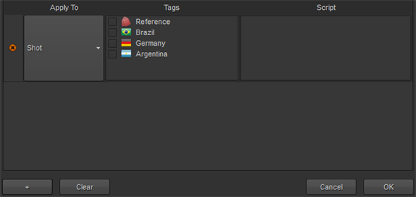
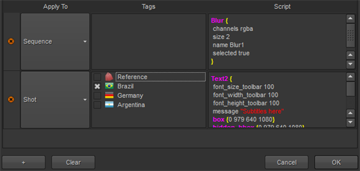

Nuke 工作室 可以包括其他节点，在任何 Nuke 项目文件 或 转码 在快照模板中导出，只需从节点图复制和粘贴脚本。
您可以将节点添加到快照、轨迹或序列中，或者将它们作为未连接的即席节点包括在脚本中，必要时按标记进行筛选。
| 1。 | 在 内容 选项卡，向下滚动到 附加 节点 控制并单击 编辑 . |
的 其他节点设置 对话框显示。
| 2. | 单击 添加条目。 |

| 3. | 单击 适用于 字段并选择当前条目适用于的内容: |
• 射击 -额外的节点被添加到导出中每个快照的脚本中。
• 轨道 -额外的节点被添加到导出中每个轨道的脚本中。
• 序列 -额外的节点被添加到整个序列的脚本中。
• 未连接 -其他节点被添加到脚本中，但没有连接到导出节点树。
• 没有 -暂时禁用当前条目。
| 4. | 选择 标签 您打算使用它来过滤哪些项目接收额外的节点。 |
例如，如果只想影响参考轨迹，请选择参考标记。没有该标签的所有项目都将被忽略。
| 5. | 将节点从节点图中复制并粘贴到 脚本 面板。 |
注意: 如果需要多个节点，可以考虑在节点图中创建一个组，并将其粘贴到 脚本 面板。

| 6. | 单击 好 接受其他节点。 |
| 7. | 选择 其他节点 复选框并按照说明完成导出过程 导出序列和剪辑实例 . |
|
|